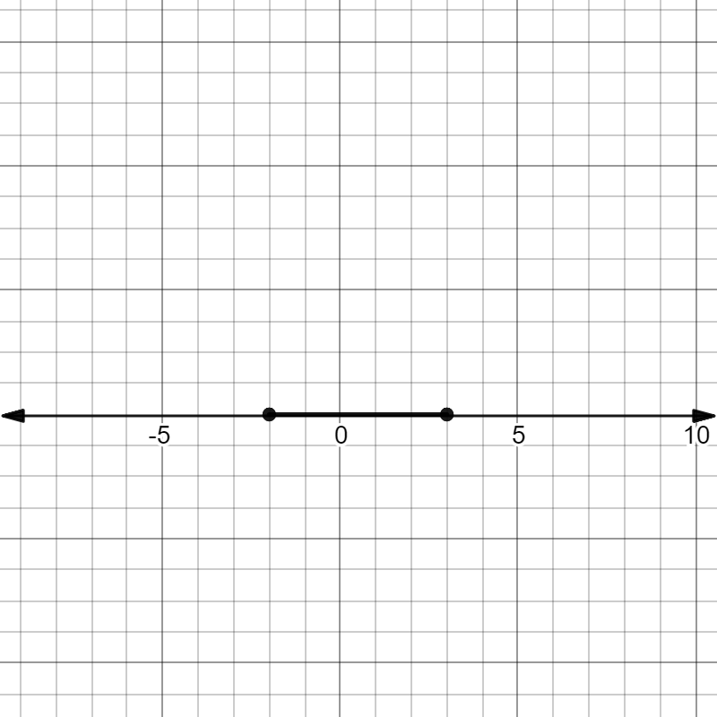

Inequalities
1. Signs
|
< less/greater than |
a > b a is greater than b / b is less than a |
|
≥ less/greater than or equal to |
a < b a is less than b |
|
⇔ the same |
|
|
≠ not equal to |
2. Representing Intervals
2.1. Interval Notation
Interval notation is written as (a, b) where a and b represent the range of numbers x can be that makes the equation true. For example, in the equation 2x > 4, this is only true when x > 2. Therefore the interval notation solution is (2, ∞), read as “from two to ∞,” or x > 2.
The brackets also have meaning. Round brackets (a, b) mean that that x can’t equal a or b. In the interval notation for the equation above, x ≠ 2, because 2(2) > 4 is incorrect. 2(2) is equal to 4 but it is not greater than 4, which is what the equation is asking for. So the interval notation of (2, ∞) is written with both round brackets on each end. ∞ can never be reached, and therefore is never included.
Square brackets mean x is able to equal that number. If the equation was changed to 2x ≥ 4, then 2 can be included in the interval, as the criteria is greater than or equal to 4. 2(2) satisfies the equals criteria, and so it is included. The interval notation is then [2, ∞).
2.2. Set Notation
Set notation is more similar to the way you write the domains of functions. Going back to the 2x > 4 equation, we could write it in set notation form as { x | x > 2}.
2.3 Number Lines
When doing number lines, you draw lines that highlight the intervals where your equation is made true. Blank circles (o) are used to show that the end of that interval is not included and filled circles represent that they are included.
3. Solving Inequalities
Solving inequalities is very similar to solving regular equations. The biggest difference is, however, is that when you are dividing or multiplying both sides by a negative number, you must reverse the direction of the inequality sign.
| -2x > 4 | |
| = x > -2 | Remember that the logic behind “moving over” numbers is essentially you dividing -2 on one side and -2 on the other) |
| = x < -2 | Reverse direction. |
4. Polynomial Inequalities
The factors are (x-3)(x-7)(x+5). Solving for x gives us 3, 7, and -5. Therefore our intervals to check are (∞, -5), (-5, 3), (3, 7) and (7, ∞).
We can check these intervals by picking a number within it, substitute x for that number, and see if the resulting answer is positive or negative. We don’t have to solve the issue necessarily, we can just take the sign and use the rules of multiplying negative and positive numbers to infer a result.
Let’s pick a number within the (∞, -5) interval. x = -7
(-7 - 7)(-7 + 5)(-7 -3) (-14)(-2)(-10) = (-)(-)(-) (The solutions in each bracket are negative, so we just replace the whole factor with a negative sign = (-) (Negative x negative = +, and + x - = -, so we have a negative answer.)
Because the solution of a number within the interval (∞, - 5) is negative (so below zero), then this interval is not part of the equation solution.
We try again for the rest of the intervals. For interval (-5, 3):
Let x = 1 (1 - 7)(1+5)(1-3) = (-)(+)(-) = (+) (-5,3) is part of the solution.
For interval (3,7): Let x = 5 (5-7)(5+5)(5-3) = (-)(+)(+) = (-) (3, 7) is not part of the solution.
For interval (7, ∞): Let x = 10 (10-7)(10+5)(10-3) = (+)(+)(+) = (+) (7, ∞) is part of the solution.
The solutions to x^3 - 5x^2 - 29x + 105 > 0 are (-5,3) and (7, ∞).
5. Rational Inequalities
When solving rational inequalities such as 2x^2/2x > 12x/15, you may want to cross-multiply. this is because when you multiply 12x by 2x (as you do when cross-multiplying) you don’t know if x is a negative number, which can change the whole equation.
Instead, move one rational to the other side and solve as usual. 2x^2/2x - 12x/15 > 0 [15(2x^2) - 2x(12x)]/(2x)(15) > 0 (30x^2 - 24x^2)/30x > 0 6x^2/30x > 0 6x/30 > 0 x/5 > 0 x > 0(5) x > 0 In interval notation, this solution is (0, ∞).